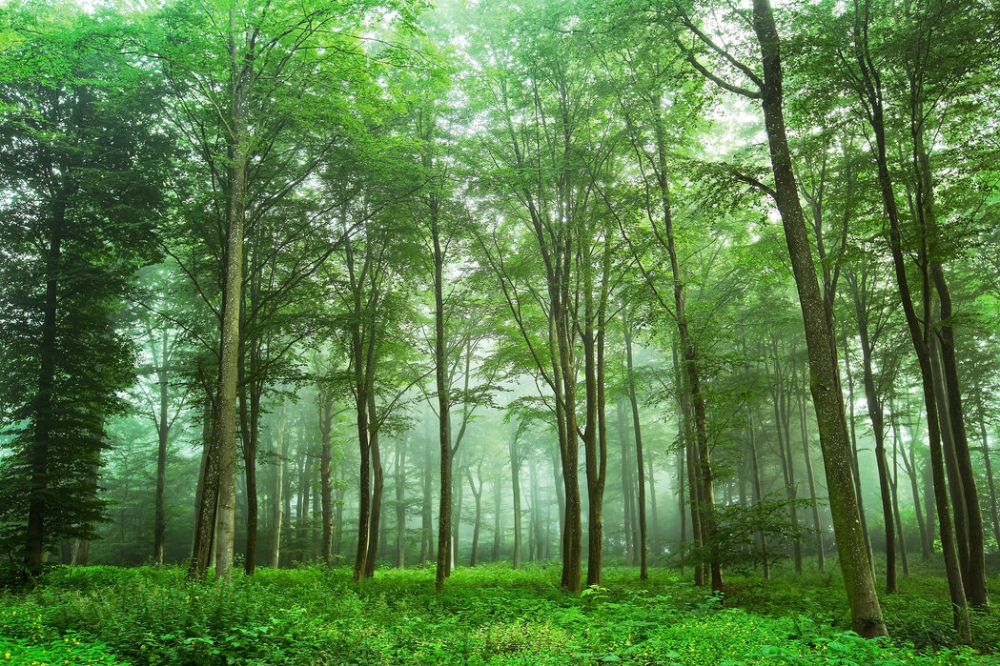

Hemat energi dimulai dari kebiasaan kecil kita.
636 siswa kelas XI sudah menjawab. Kebiasaan kita sudah baik, tinggal dikuatkan di beberapa titik.
636responden dari 639 siswa terdata
3,36skor rata-rata dari 4,00
96,2%berkategori Baik atau Sangat Baik
Listrik yang menyala tanpa fungsi tetap terpakai.
Laptop yang dibiarkan hidup, charger yang tertancap, dan AC yang terlalu dingin kelihatan sepele. Di sekolah dengan ratusan perangkat, kebiasaan kecil itu bertumpuk setiap hari.
Karena itu kami bertanya langsung pada teman-teman sendiri: kebiasaan apa yang sudah jalan, dan di mana kita masih lengah?
90,8%rata-rata siswa menjawab "sering" atau "selalu" pada sepuluh kebiasaan hemat energi
13,7%siswa jarang membatasi pemakaian laptop dan gawai (butir P04)
13,2%siswa jarang berani menegur atau mengajak teman hemat listrik (butir P09)
Tiga kebiasaan yang paling perlu dikuatkan.
Dari sepuluh butir kuesioner, tiga butir ini punya skor terendah. Di sinilah perubahan kecil paling terasa.
Batasi laptop dan perangkat elektronik 3,22
Ajak teman peduli hemat listrik 3,22
Pilih fasilitas dan transportasi hemat energi 3,30
Skor rata-rata skala 1 sampai 4. Sumber: Kuesioner ENERGI XI, 636 responden.
Kalkulator Pemborosan Energi
Masukkan daya dan lama menyala sebuah alat, lalu lihat berapa kWh, rupiah, dan karbon yang terbuang sia-sia setiap bulan.
Hitung Sekarang